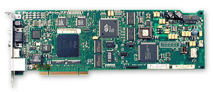
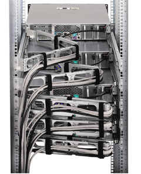

Андрей Борзенко
Современные тенденции развития вычислительной техники предполагают минимизацию общей стоимости владения оборудованием. В частности, исследования Gartner Group свидетельствуют: стоимость приобретения вычислительной техники составляет менее 20% от общих расходов на ее эксплуатацию. Основные расходы в течение всего срока службы приходятся на дальнейшее сопровождение. Для уменьшения таких расходов применяется ряд программных и аппаратных решений - в частности, удаленное администрирование систем.
Так, быстрый рост числа серверов в расширяющихся корпоративных сетях требует экономичных решений, которые позволят вовсе исключить возможность простоя сети или сократить до минимума его время. Один из способов достижения этой цели - применение эффективных средств управления сервером. Правильный выбор инструмента управления зависит от ответа на следующие вопросы: как будет осуществляться доступ к серверу, какие функции управления должны при этом выполняться и насколько важно управление данным сервером.
Вообще говоря, в зависимости от метода подключения и состояния сервера доступ к нему может осуществляться различными способами. В разработках различных компаний активно использовались как стандартные отраслевые решения для удаленного администрирования, так и собственные фирменные. Подключаться к серверу с других компьютеров можно по основному или по служебному каналу, в последнем случае - по телефонной линии или путем прямого последовательного подключения. После такого подключения к серверу сетевой администратор должен будет выбрать соответствующий инструмент управления в зависимости от того, в каком состоянии находится сервер - рабочем или нерабочем.
Корпорация Compaq Computers (ныне объединившаяся с Hewlett-Packard) еще в 1990 г. выпустила на рынок серверную плату удаленного управления, которая позволяла осуществлять коммутируемый доступ к удаленному компьютеру, защищенный паролем, и перехватывать управление им в режиме командной строки. В 1992 г. впервые было объявлено о создании другого продукта - Insight Manager, первого пакета программ управления серверами. В дальнейшем инженеры и программисты корпорации значительно расширили его возможности. Insight Manager был интегрирован с продуктами Microsoft SMS, Novell ManageWise и рядом других, дополнен программами асинхронного управления и управления источниками бесперебойного питания. Помимо серверов, появилась возможность удаленного администрирования настольных систем и портативных компьютеров.
Таким образом, начал формироваться промышленный подход к управлению удаленными устройствами в территориально разнесенной сети на базе программно-аппаратных агентов, функционирующих на базе удаленного оборудования. Стандартом де-факто для описания среды обмена управляющей информацией стал протокол SNMP.
Integrated Remote Console
Надежность современных операционных систем для серверов позволяет последним функционировать в течение длительного времени без участия администратора. Но, как и любые системы высокой сложности, они не могут гарантировать 100%-ной устойчивости в работе. При зависании ОС в результате сбоя или аппаратной ошибки помимо всего прочего перестают функционировать и программные агенты Insight Manager. В результате администратор может потерять связь с сервером, что крайне нежелательно при удаленной работе с оборудованием.
С октября 1996 г. все серверы производства Compaq оснащались специальным средством для решения этой проблемы - встроенной консолью удаленного управления Integrated Remote Console (IRC). Аппаратные и микропрограммные средства консоли были встроены в системную плату сервера и не зависели от работоспособности ОС. Микрокод IRC выполнялся специальным микроконтроллером (заказной микросхемой) IRC ASIC, разработанным Compaq, и это позволяло минимизировать нагрузку на центральный процессор.
Основная задача IRC состояла в том, чтобы дистанционно предоставить администратору доступ к клавиатуре сервера и его видеоданным в текстовом режиме. Для связи с администратором использовался стандартный модем, подключенный к серверу. На рабочем месте администратора, кроме консоли Insight Manager, мог быть установлен любой эмулятор терминала, соответствующий стандарту ANSI.
В режиме удаленной консоли IRC передавала видеоданные в полнотекстовом режиме с сервера на терминал администратора. Команды с клавиатуры администратора возвращались на сервер. Таким образом, можно было дистанционно контролировать работу сервера, загружать или выгружать программы, проводить мягкую перезагрузку средствами ОС, наблюдая за ее ходом.
При невозможности перезапуска сервера средствами ОС администратор мог сделать это принудительно средствами IRC. Консоль поддерживала два таких метода - перезапуск сервера (Server Reset) и выключение/включение питания (Power Cycle). В последнем случае питание сервера выключалось примерно на 15 с. Поскольку работа IRC не зависела от функционирования ОС, администратор мог наблюдать весь процесс загрузки и при необходимости вмешиваться в него.
Иногда случалось, что сервер проводил перезагрузку встроенными средствами восстановления работоспособности, но администратор не мог наблюдать за этим процессом (например, ночью). С учетом этого IRC в процессе перезагрузки вела запись сообщений, выводимых на экран. Впоследствии администратор, подключившись к серверу, мог просмотреть все эти сообщения.
Надо отметить, что для своего времени интегрированная консоль обладала большими возможностями удаленного администрирования. Например, не секрет, что для безопасной работы системы необходима тщательная защита ее от несанкционированного доступа. В рассматриваемом случае системный администратор мог надлежащим образом сконфигурировать встроенные в IRC средства защиты - пароли, профили пользователей и обратный вызов. В частности, поддерживалась работа до восьми пользователей с уникальными паролями и правами.
Для доступа к работоспособному серверу по служебному каналу при помощи стандартного протокола Point-to-Point Protocol (PPP) можно было применять ПО Insight Asynchronous Management, которое позволяло администратору дистанционно выполнять все функции ПО Insight Manager по выдаче предупреждающих сообщений и сбору данных. IRC, дополняя возможности Insight Asynchronous Management, взаимодействовала с этим ПО таким образом, что администратор, подключившись по служебному каналу к нормально работающему серверу, мог использовать оба этих средства управления.
Слаженно работающие аппаратные компоненты встроенной консоли удаленного управления, аппаратные средства удаленного перезапуска сервера и возможность воспроизведения последовательностей сообщений, отображаемых на мониторе сервера при его перезапуске, позволяли администратору контролировать работу серверов независимо от состояния их ОС и от того, находились ли они на разных удаленных пунктах или были размещены на центральном пункте, но вдали от администратора.
Remote Insight Board/PCI
Администраторам, которым требовались еще более широкие возможности управления, постоянный доступ к серверу и возможность получать предупреждающие сигналы независимо от состояния аппаратных средств сервера или его ОС, предлагалась факультативная плата Remote Insight Board. На практике случается, что у сервера, работающего с критически важными приложениями, по каким-либо причинам пропадает питание или происходит аппаратный отказ. При этом связь с сервером может прерваться. Администратор, даже не имея физического доступа к серверу, должен знать причину этой неисправности и иметь возможность предпринять какие-либо действия. Для решения подобных проблем был разработан специальный контроллер Remote Insight Board (его модификация - Remote Insight Board/PCI).
Конструктивно контроллер был выполнен в виде платы, устанавливаемой в слот PCI (первый вариант устанавливался в слот EISA). Он был полностью независим от работоспособности сервера, включая независимость от питающего напряжения, для чего контроллер оснащался собственной резервной батареей. На плате были установлены микропроцессор Intel 960, оперативная и флэш-память с программным обеспечением. При помощи прилагаемых интерфейсных кабелей контроллер подключался к видеопорту и порту клавиатуры сервера.
В процессе работы администратор мог установить связь с Remote Insight Board в трех возможных вариантах. На плате имелся интегрированный сетевой адаптер Ethernet 10/100Base-T. Связь с компьютером администратора в этом случае происходила по локальной сети по протоколу SNMP. Для управления по асинхронным линиям связи использовалась модемная связь по протоколу PPP. Для этого на плате было также предусмотрено гнездо формата PC Card, в которое при необходимости можно было установить модем соответствующего формата. Максимальная скорость работы с линией в этом случае составляла 33,6 Кбит/с. Другой способ работы по асинхронным линиям связи - использование внешнего модема. Для этого на плате был предусмотрен порт RS-232 и имелась соответствующая программная поддержка.
На контроллере в резидентном режиме исполнялась специальная программа Remote Insight Console. Используя на своем компьютере эмулятор стандартного текстового ANSI-терминала, администратор мог работать с этой программой в режиме командной строки. С ее помощью он мог выполнять различные действия с контроллером, например, изменять параметры системы безопасности (поддерживались до 12 пользователей с уникальными правами), просматривать журналы событий и многое другое. Кроме того, используя Remote Insight Console, администратор мог полностью контролировать работу сервера.
В процессе своей работы Remote Insight Board/PCI дублировала все функции Integrated Remote Console и добавляла новые возможности (например, выдачу предупреждений с использованием пейджера). На своем мониторе администратор видел все текстовые сообщения с видеоадаптера сервера, включая сообщения при холодном старте и загрузке операционной системы.
При работе установленной на сервере ОС Windows NT видеоадаптер сервера переходил в графический режим. Для этого случая контроллер Remote Insight Board/PCI был оснащен консолью Remote Graphical Console, эмулирующей стандартный графический терминал. А на компьютере системного администратора должен был быть установлен один из программных пакетов - Compaq Carbon Copy 32 или Symantec pcAnywhere 32.
Контроллер Remote Insight Board/PCI был полностью интегрирован с приложением Insight Manager. Используя это приложение и подключившись к контроллеру, можно было получить те же возможности, что и при работе с программным агентом Insight Manager. Контроллер поддерживал работу с ОС Microsoft Windows NT 3.51/4.0; Novell Netware версий 3.12, 3.2, 4.0 и 4.10, включая SMP 4.10; Novell intraNetWare 4.11 и 4.12, включая SMP intraNetWare; SCO OpenServer 5; SCO UnixWare версий 2.1.x и 7; IBM OS/2 Warp Server Advanced 4.0, включая версию с SMP 4.0; IBM OS/2 Warp Server 4.0; IBM OS/2 Warp и Warp Connect 3.0; IBM OS/2 SMP версии 2.11; IBM OS/2 2.x.
Использование дополнительного контроллера Remote Insight Board/PCI для удаленного администрирования было очень желательно в критически важных системах, особенно если администратор не имел физического доступа к серверам.
Remote Insight Lights-Out
Дальнейшая работа над совершенствованием технологии удаленного доступа привела к появлению в 2000 г. продукта Remote Insight Lights-Out Edition (RILOE). Это была новая, предназначенная для работы только через локальную сеть версия платы Remote Insight Board/PCI, обладающая рядом усовершенствованных возможностей. Она упрощала и удешевляла решение задач дистанционного доступа и администрирования серверов стандартной архитектуры. Плата имела собственные интегрированные аппаратные компоненты (процессор, ОЗУ, сетевой интерфейс, виртуальный выключатель питания), обеспечивающие доступ к серверу и управление им в полном объеме, независимо от текущего состояния операционной системы и аппаратной части самого сервера. Благодаря встроенной в ПЗУ платы RILOE поддержке удаленной графической консоли администрирования обеспечивался беспрепятственный доступ к серверу в полностью графическом режиме, без установки дополнительного ПО на администрируемом сервере либо на используемом для администрирования клиентском компьютере. Применение этой платы позволило уменьшить время реакции на события, ведущие к простоям и, таким образом, дополнительно сократить простои и потерянные доходы.
|  |
| Плата RILOE.
|
Благодаря применению этой платы для шины PCI администратор мог пользоваться полным доступом к серверу и проводить его администрирование с подключенного к сети клиентского компьютера, даже когда в месте его установки (в центре обработки данных или на удаленном объекте) никто не работал, например, была отключена подача электроэнергии (Lights-Out - выключен свет). С выпуском этого продукта была продолжена линия на внедрение нововведений, разработанных в соответствии с пожеланиями пользователей. В числе таких нововведений можно назвать встроенную графическую консоль дистанционного администрирования, поддержку протокола DNS/DHCP и функцию дистанционного включения/выключения.
Плата RILOE обладала рядом привлекательных возможностей, обеспечивающих доступ к серверам, расположенным в центрах обработки данных или на удаленных объектах, и управление ими в полном объеме. В числе новых возможностей продукта - подключаемая по локальной сети графическая консоль администрирования с автоматическим определением режима и уровня графического разрешения экрана администрируемого сервера; виртуальный выключатель питания (для дистанционного включения и выключения питания сервера); виртуальный привод гибких дисков (позволяет, например, выполнить загрузку сервера с удаленного дисковода) и автоматическое конфигурирование IP-параметров платы с использованием протоколов DNS/DHCP. Впрочем, данная плата поддерживала и многочисленные возможности своей предшественницы, Remote Insight Board/PCI. В их число входят: доступ к встроенному журналу событий администрирования и системных событий, запись и воспроизведение текстового вывода на экран администрируемого сервера в процессе перезагрузки и при возникновении сбоев, администрирование пользователей общим числом до 12, передача исключительных ситуаций протокола SNMP для обработки в ПО Insight Manager, а также полная интеграция с ПО Insight Manager Console и Survey. Доступ к этим функциям платы мог осуществляться из любого стандартного Web-браузера, а для настройки ее конфигурации можно было использовать утилиту Smart Start, встроенную в ПЗУ утилиту конфигурирования или специальную программу Remote Insight Board NT Configuration Utility.
Собственно, основные различия заключались в следующем. RILOE представляла собой версию Remote Insight Board/PCI, предназначенную для работы только через локальную сеть. Она не поддерживала работу через внутренний или внешний модем. RILOE не имела встроенного аккумулятора резервного питания, при выключении администрируемого сервера она получала питание от внешнего сетевого адаптера, входящего в комплект поставки.
RILOE имела встроенную в ПЗУ поддержку графической консоли дистанционного администрирования. В отличие от Remote Insight Board/PCI, для использования графической консоли с данной платой не требуется дополнительного ПО, такого, как Carbon Copy или PCAnyWhere. Кроме того, RILOE имела виртуальный выключатель питания, позволяющий полностью контролировать питание определенных моделей серверов ProLiant. Плата Remote Insight Board/PCI такими средствами не оснащалась. Кстати, плата RILOE была значительно дешевле, чем Remote Insight Board/PCI.
Одна из функций платы RILOE, отличающих ее от Remote Insight Board/PCI, - возможность осуществления дистанционного доступа к серверу в графическом режиме без установки дополнительного ПО на администрируемом сервере или используемом для администрирования клиентском компьютере. Эта функция реализована во встроенном ПО, записанном в ПЗУ платы. Она работает полностью независимо от ОС администрируемого сервера (даже от того, находится ли эта ОС вообще в работоспособном состоянии). Программа в ПЗУ определяет текущий режим работы видеоподсистемы сервера и передает графическую информацию на клиентский компьютер администратора. Для работы с графической консолью на этом компьютере необходимо иметь только Web-браузер, который должен обеспечить загрузку с платы по сети и исполнение Java-апплета, поддерживающего как текстовый, так и графический режимы работы и легко переходящего от одного к другому по мере надобности. Плата поддерживает 64 цвета и автоматически определяет графическое разрешение видеоподсистемы сервера (для настройки браузера на работу с этим разрешением).
Как уже отмечалось, в процессе нормальной работы плата RILOE получает питание стандартным образом - через разъем шины PCI. Для сокращения перечня ситуаций, в которых дистанционный доступ к плате оказывается невозможен, и повышения уровня готовности в комплект поставки включается внешний источник питания с кабелем. На внешней планке PCI-платы имеется гнездо ввода питания постоянного тока, в которое вставляется соответствующий штекер сетевого адаптера. Если подключен внешний источник питания, плата может работать и при выключенном администрируемом сервере. В комплект платы RILOE входит кабель для соединения ее с электроникой управления питанием серверов. Пользователь, наделенный соответствующими полномочиями, может дистанционно включать и выключать питание администрируемого сервера через интерфейс на базе браузера.
Стоит отметить, что виртуальный выключатель питания не обеспечивал завершения работы системы. Эта функция предназначалась для выключения сервера в случае зависания операционной системы. В тех же случаях, когда ОС сохраняет работоспособность, сервер можно корректно остановить средствами ПО администрирования Insight Manager либо путем запуска обычной процедуры завершения работы с графической консоли дистанционного администрирования.
Виртуальный привод гибких дисков (Virtual Floppy Drive) - новая функция платы RILOE. Виртуальный привод позволяет загрузить сервер с дискеты, вставленной в дисковод любого из подключенных к сети компьютеров. Тем самым администратор избавлен от необходимости подходить к серверу, чтобы вставить дискету в его физический дисковод, что повышает эффективность его работы.
Схема работы виртуального привода гибких дисков предусматривает создание образа дискеты и передачу его по сети в память платы RILOE, установленной на администрируемом сервере. Затем плата перенаправляет операции ввода-вывода с физическим дисководом на образ дискеты в своей памяти. Поскольку память платы RILOE не зависит от сервера, загруженный в нее образ дискеты доступен для использования и после перезагрузки или выключения питания сервера.
Использование виртуального привода дискет открывает массу возможностей дистанционного администрирования: обновление ПО во флэш-память, дистанционная диагностика, дистанционная установка ОС по сети, дистанционная загрузка образа инсталлированного ПО и лечение вирусной инфекции и т. п.
Плату RILOE можно также использовать для дистанционного администрирования сервера, с которым нет связи по сети, с помощью находящегося в одной с ним сети Ethernet-шлюза модемной связи или сервера удаленного доступа, сконфигурировав соответствующее удаленное соединение. Альтернативно можно было воспользоваться платой Remote Insight Board/PCI, рассчитанной на работу через модем или через последовательный порт.
В модернизированном варианте платы RILOE начали поставляться с более быстродействующим процессором Intel i960 RD, работающим на тактовой частоте 66 МГц (вместо Intel i960 RP 33-МГц). Новая 66-МГц версия процессора обеспечивала более высокую производительность при работе с графической консолью дистанционного администрирования.
Таким образом, к основным отличительным особенностям RILOE стоит отнести ведение журнала регистрации событий, ошибок и неисправностей серверной аппаратуры и ПО; удаленное управление электропитанием сервера; управление удаленным компьютером в графическом режиме; наличие виртуального гибкого диска; интерфейс на базе стандартного Web-браузера; обеспечение безопасности соединения с удаленным компьютером на базе SSL-метода; независимость от типа конкретной ОС, установленной на сервере; а также уменьшение количества кабелей, необходимых для работы сервера.
Remote Insight Lights-Out Edition II
В 2002 г. торговая марка RILOE объединила уже целое семейство модификаций продуктов: Remote Insight Lights-Out Standard (стандартный функциональный набор); Remote Insight Lights-Out Advanced (расширенная функциональность); Remote Insight Lights-Out Blades (расширенная функциональность, дополненная учетом особенностей тонких и сверхтонких серверов, устанавливаемых в стойку в тесном пространстве коммуникационных центров). Целевым сегментом применения средств RILOE нынешнего поколения стали практически все корпоративные серверы стандартной архитектуры, поддерживающие информационную систему предприятия. При разработке данного поколения продукта был сделан акцент на учет самой главной особенности современных информационных систем - их функционировании в непрерывно меняющейся информационной среде.
|  | Стойка с серверами, оснащенными платами RILOE.
|
Плата RILOE II, выпущенная на рынок в прошлом году, позволяет администраторам ИТ-служб существенно более экономно осуществлять контроль и управление как одним, так и тысячами серверов стандартной архитектуры HP ProLiant в рамках центра обработки данных или в удаленных подразделениях по всему миру. Новые технологии (включая усовершенствованные возможности в области графики и обеспечения безопасности) позволяют быстрее и эффективнее выполнять такие критические операции, как развертывание серверов, обслуживание и установка приложений, не требуя, чтобы администратор физически находился в месте расположения сервера. За счет использования более мощного процессора PowerPC 405GP 200 МГц плата RILOE II обеспечивает почти пятикратное повышение графической производительности для стандартного соединения Ethernet, а также предлагает более развитые по сравнению с предыдущей версией средства управления удаленной графической консолью и 128-разрядное шифрование данных для улучшения безопасности. Новые возможности платы RILOE II в области использования виртуальных носителей информации позволяют администратору виртуально удаленно использовать CD- или флоппи-диски.
Сегодня плата RILOE II полностью интегрирована с комплектом HP Insight Management Suite, включая доступ к RILOE II из Insight Manager 7 с помощью одного щелчка мыши и возможность развертывания и настройки конфигурации ПО сервера с помощью ProLiant Essentials Rapid Deployment Pack. Кроме того, эта плата тесно интегрирована с комплектом HP OpenView - ПО для управления инфраструктурой. Оно позволяет компаниям осуществлять управление и оптимизировать бизнес-процессы посредством инфраструктуры информационных технологий, передачи голоса и данных.
С точки зрения аппаратной реализации продукт RILOE сегодня выпускается в двух модификациях: в виде PCI-платы Remote Insight Lights-Out Edition и продукта Integrated Lights-Out (iLO), встроенного в системную плату сервера. Разница в функциональности между ними не очень велика. Важно, пожалуй, лишь то, что вариант в виде отдельной платы способен работать, даже если сервер выключен из электрической розетки. Вариант в виде своеобразной платы расширения, встроенной в системную плату, требует, чтобы сервер был включен в электрическую розетку.
Гораздо более важны различия между этими двумя продуктами, лежащие в области схемотехнических решений. С этой точки зрения Integrated Lights-Out - представитель следующего поколения систем управления. Это дополнительный элемент на системной плате. Его можно рассматривать либо как очень специфический вариант платы расширения, либо как уникальную микросборку, в которой скомбинированы возможности Remote Insight Lights-Out и дополнительные расширенные функции мониторинга, предоставляемые серверным оборудованием, точнее, заказной микросхемой ASM ASIC (Advanced System Management). В частности, в число функций ASM входит наблюдение за состоянием температуры и скоростью вращения вентиляторов, а также участие в выполнении процедуры восстановления сервера после перезагрузки. Кроме того, архитектура Integrated Lights-Out допускает перезагрузку как встроенной процессорной подсистемы, так и самой серверной системы независимо друг от друга. Иными словами, процессорный блок iLO обеспечивает широкие возможности управления. В частности, даже при перезагрузке сервера поддерживается уже установленный доступ администратора к удаленному серверу. То же свойство Integrated Lights-Out используется при модернизации промежуточного ПО сервера, что позволяет избежать перезагрузки или иных манипуляций с сервером. Возможности платы удаленного управления iLO настолько неординарны, что позволяют применять в качестве удаленного сервера не только устройство без дисковода гибких дисков и привода CD-ROM, но и без монитора, клавиатуры и манипулятора.
Резюме
По мере роста плотности размещения серверов в центрах обработки данных на их администрирование начинает уходить все больше времени и средств, а используемые процедуры становятся все менее гибкими. Недорогая плата Remote Insight Lights-Out Edition, простая в использовании, с широким спектром функциональных возможностей (особо важное значение имеют подключение по локальной сети и встроенная поддержка графической консоли дистанционного администрирования) позволяет администраторам не оснащать серверы мониторами, клавиатурами и мышами, соответственно сократив и число кабелей. Для доступа к серверу, находящемуся где-то глубоко в недрах центра обработки данных, с полным набором возможностей управления администратору достаточно подключенного с сети компьютера с Web-браузером и совершенно необязательно находиться в помещении центра.
Как известно, расширение бизнеса требует размещения множества серверов на различных объектах, разбросанных по всему миру. Но служба ИТ остается централизованной и не может безгранично наращивать штат. Обслуживание серверов в таких распределенных вычислительных средах с выездом специалистов на место превращается в весьма дорогостоящее дело, отнимающее много времени и требующее применения весьма негибких процедур. Ключ к продолжительной работе без простоев дает удобный дистанционный доступ к этим серверам. Необходимо быстрое и эффективное реагирование на события, способные приводить к простоям, и проведение диагностики еще до выезда специалиста по ремонту на место. Продукт Remote Insight Lights-Out Edition обеспечивает ИТ-администратору гибкие средства дистанционного администрирования, снижающие риск простоев. Кроме того, применение Remote Insight Lights-Out Edition позволяет упростить задачу администрирования вычислительных сред центров обработки данных с большой плотностью размещения оборудования, что дает дополнительное снижение затрат на ИТ.
Краткий словарь терминовЗащита на базе SSL. Протокол Secure Sockets Layer фирмы RSA используется в системе Remote Insight Lights-Out Edition для шифрования трафика протокола HTTP, по которому передаются данные в ходе сеанса работы пользователя. Интеграция агентских компонентов администрирования с поддержкой Web. Имеется в виду интеграция агентских компонентов администрирования Insight Web Agent с системой Remote Insight Lights-Out Edition. Интерфейс просмотра данных администрирования системы RILOE позволяет, в дополнение к основному набору функций, сформировать непосредственную ссылку на агентский компонент (или компоненты) Insight Web Agent, исполняющийся на администрируемом сервере. Утилита конфигурирования в ПЗУ. Утилита конфигурирования системы RILOE, записанная в ПЗУ платы и позволяющая быстро сконфигурировать ее локально либо дистанционно, используя графическую виртуальную консоль управления на базе браузера. "Безголовый сервер". Сервер, установленный в аппаратурную стойку в центре обработки данных, не имеющий монитора, клавиатуры и мыши и не подключенный к комплекту этих устройств через переключатель вместе с другими серверами. RILOE позволяет развертывать серверы "безголовыми". Виртуальный привод гибких дисков. Поддерживается в системе RILOE, позволяет дистанционно загрузить администрируемый сервер, в который установлена плата Remote Insight Board, с системной дискеты с использованием дисковода одной из клиентских машин в сети. Утилита работы с образами гибких дисков. Программа, с помощью которой можно создавать образы гибких дисков в виде файлов для использования с виртуальным приводом гибких дисков RILOE. Виртуальная графическая консоль дистанционного управления. Использующая аппаратную часть системы RILOE функция дистанционного управления с графическим интерфейсом. Позволяет просматривать всю информацию об администрируемом сервере и осуществлять все операции по управлению им из браузера, в том числе на этапах нормальной работы, завершения работы, включения/выключения, загрузки операционной системы. Поддерживаются Windows-режим и текстовый режим. Виртуальная графическая консоль не зависит от применения той или иной операционной системы и не требует установки дополнительного ПО. Ее называют также собственной или встроенной графической консолью дистанционного управления. Поддержка DNS/DHCP. Способность динамически назначать IP-адреса платам Remote Insight Board системы RILOE с использованием служб DNS/DHCP. Lights-Out ("не включая света, при выключенном свете"). Обозначает режим администрирования центра обработки данных, не требующий присутствия людей на месте установки сервера для его ежедневного обслуживания. Внешний резервный источник питания. Внешний адаптер сети переменного тока (выдающий постоянный ток 1 А при напряжении 9 В), обеспечивающий питание RILOE для круглосуточного непрерывного доступа к серверу, независимо от состояния его собственного выключателя питания. Виртуальный выключатель питания. Функция дистанционного управления питанием администрируемого сервера с помощью RILOE. |